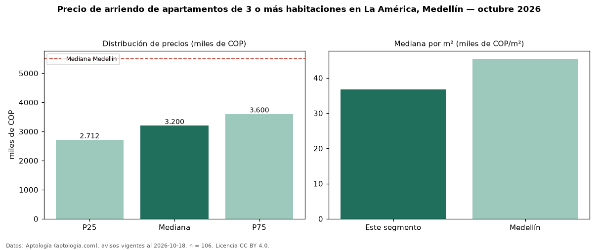

Precio de arriendo de apartamentos de 3 o más habitaciones en La América, Medellín — octubre 2026
Con 106 avisos vigentes, el canon mediano de apartamentos de 3 o más habitaciones en arriendo en La América, Medellín es COP 3,20 millones al mes. Eso es 42 % por debajo de la mediana de Medellín para apartamentos de 3 o más habitaciones (COP 5,50 millones). Por metro cuadrado, la mediana es COP 36.786/m² al mes (n = 104 avisos con área), 19 % por debajo de Medellín (COP 45.455/m²). Son 62 % de los 172 avisos de apartamentos en arriendo de la zona, cuya mediana general es COP 2,80 millones (+14 %). Con el precio por m² de venta del mismo segmento (COP 5,50 millones/m²), la rentabilidad bruta implícita es 8,0 % anual (aproximación con medianas de ofertas distintas). El área mediana anunciada es 85 m². El estrato más frecuente es 4 (69 % de los avisos con estrato). 68 % de los avisos con el dato declara parqueadero o cochera. Datos: Aptología (aptologia.com), CC BY 4.0 — https://www.aptologia.com/arriendo/medellin/la-america. Archivos: PDF, CSV con las cifras y gráfica PNG.

| Avisos únicos | 106 |
|---|---|
| Percentil 25 | COP 2.712.500 |
| Mediana | COP 3.200.000 |
| Percentil 75 | COP 3.600.000 |
| Mediana por m² | COP 36.785 |
Fuente: avisos vigentes de portales inmobiliarios recopilados por Aptología, deduplicados (mínimo 30 avisos únicos por celda). Precios pedidos, no cerrados. Fecha: 2026-10-18.